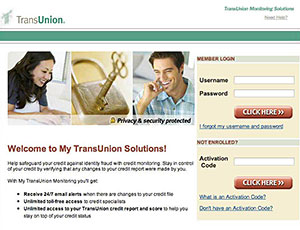

And respond fast. Within 48 hours, your program will be up and running so you can address a breach or fraud event with:
- Dedicated telephone assistance, seamlessly integrated as a toll-free hotline or warm transfer from our customer service professionals
- Customer notification, so affected parties find out in a timely and professional manner
Arm customers/members with Credit Monitoring & Identity Theft Protection, which includes UNLIMITED, 24/7 TransUnion Report & Score access, up to $1 Million in Identity Theft Insurance and more. Setting it up is easy:
- Get activation codes
- Send them to your customers/members
- They visit www.transunionmonitoring.com and sign up with supplied code

Guide identity theft victims toward recovery with our Identity Restoration Services. They’ll have direct access to a dedicated TransUnion Case Manager who:
- Reviews the TransUnion credit file
- Identifies the best plan of action
- Initiates disputes directly with relevant credit bureaus and financial institutions